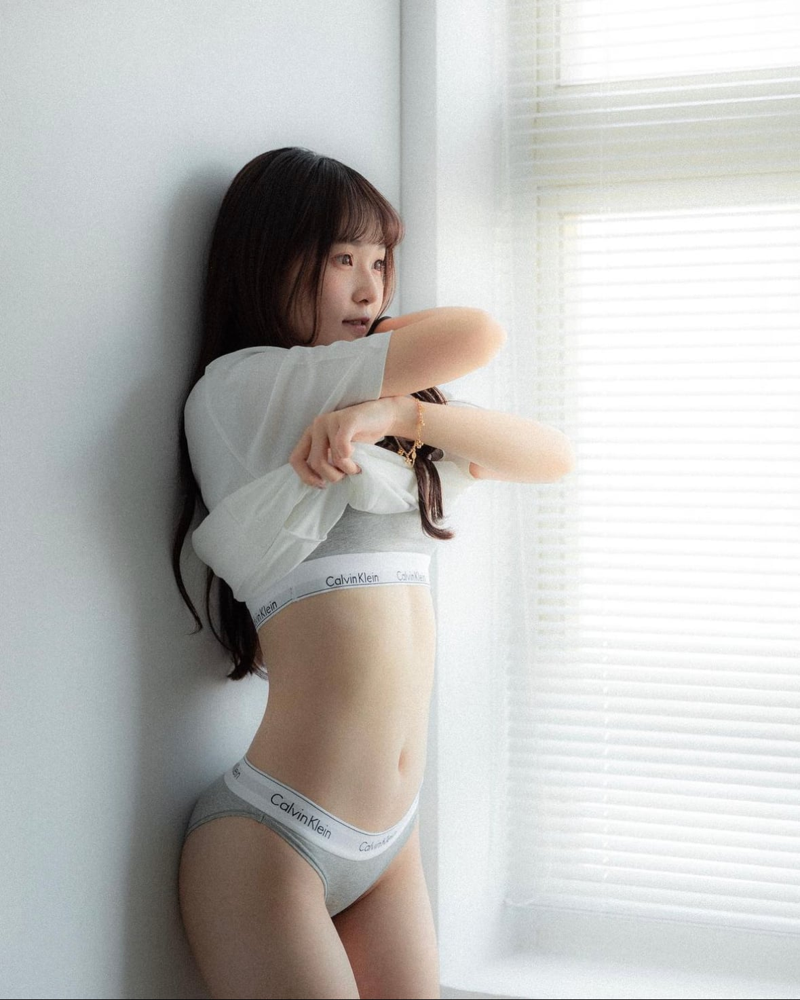

거유파
장점 - 시각적인 풍요로움
부드럽고 말랑푹신한 촉감
단점 - 중력으로 인해 등이 말려있음
가슴에 땀이 참

빈유파
장점 - 빠르게 달릴수 있음
한품에 쏙 안김
단점 - 남자와 다른부분이 한곳 적음
여름에 옷 사이로 노출될 확률이 높음
거유파
장점 - 시각적인 풍요로움
부드럽고 말랑푹신한 촉감
단점 - 중력으로 인해 등이 말려있음
가슴에 땀이 참

빈유파
장점 - 빠르게 달릴수 있음
한품에 쏙 안김
단점 - 남자와 다른부분이 한곳 적음
여름에 옷 사이로 노출될 확률이 높음
댓글
수집 당시 댓글 29개
악덕팬더 · 8 시간 전
왈왈왈왈왈왈왈왈왈왈왈왈 · 8 시간 전
소... 솔직히 중요한 건 골반이고 가슴은 취향 차이라고 생각해요
· ㅇㅎ심판관 · 3 시간 전
고수네
골발이 크다면 상체 통이 어느정도 될테고
취향따라서 수술도 가능하지
근데 흉곽이 작으면 수술도 안되ㅋ
· 보스톤도나쓰 · 2 시간 전
우리 와이프 엉덩이 40인치인데 상체 존나 작음
꼭 그런건 아닌듯
· 혹시붕괴아십니까정말갓겜입니다 · 1 시간 전
맞아! 그리고 빈유가 좋은건 골반이 두드러지기 때문이라고 생각해
어뎁터 · 8 시간 전
싸울 필요가 없다
대비가 있어야 균형이 살아난다
70도물구나무서기 · 8 시간 전
1순위는 골반임 가슴 없어도 허리 잘록하고 골반이 크면 꼴림 가슴이 크면 심신 안정마저 얻게 됨
비숑은산책중 · 8 시간 전
빈유파 라는 게 있음? 슬렌더라도 가슴은 있어야 좋던데... 실망감과 아쉬움은 어쩔수없음ㅠ
· Enjor · 3 시간 전
소아성애자
니엄마만수무강 · 7 시간 전
나같은게 백날 골라도 절대 여자를 곁에 둘순없을거다 나도 나는 만나기싫으니까 이렇게 도태되고 멸종하는게 맞다
camaross · 7 시간 전
솔직히 밑가슴 아래 땀냄새 개꼴이면 개추
츄이로 · 7 시간 전
난 마츠모토 이치카가 제일 몸매가 쩌는거 같음
· Enjor · 3 시간 전
고무줄몸매?
· 츄이로 · 2 시간 전
그게 뭐임?
이개새끼짬뽕 · 6 시간 전
?저걸 빈유라고 합니까?
깁기 · 3 시간 전
있는게 좋지 없는걸 왜?
렙벨코즈 · 3 시간 전
오…
왓어버거 · 3 시간 전
빈유파는 게이파라고보면 됨 ㅋㅋㅋㅋㅋ
· Enjor · 3 시간 전
소아성애자 or 게이파x 쌉게이O
에궁님 · 3 시간 전
빈유는 좀....페1도도 아니고
또한번봄 · 2 시간 전
닥후지
주관적인요정 · 2 시간 전
가슴만보는건 하수 골반까지 보는건 중수 발목까지보는게 고수임
보스톤도나쓰 · 2 시간 전
나는 와이프 골반이 40인치인데 가슴까지 크면 오히려 부담되고 이상할듯.. 70 b정도에 골반큰게 개꼴임
첼지구나 · 2 시간 전
개드립에선 빈유파랑 가지파랑 싸우던데
겨드랑이스마타 · 2 시간 전
난 골반이랑 다리 얼굴만봄ㅋㅋㅋㅋ
드디어가입했다~! · 1 시간 전
빈유성애자들은 문신한 사람처럼 끊임없이 자신이 페도가 아님을 증명해야한다.
년째도쿄생활중 · 1 시간 전
무조건 거유다 거유
구광모 · 23 분 전
오히려 빈유가 꼭지 노출 확률 높음
숙일때..
렙이말한다ㅡ니가옳다 · 5 분 전